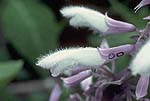
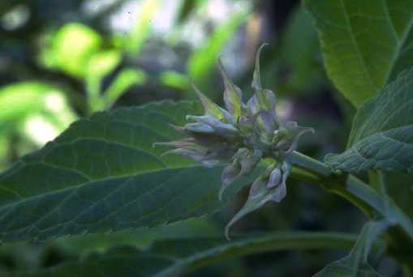
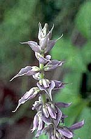
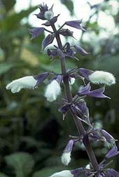
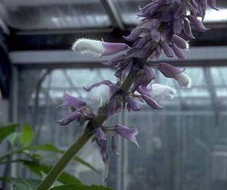
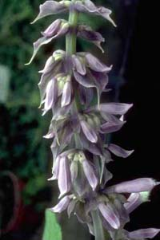

THE BOTANY OF SALVIA DIVINORUM (LABIATAE)The Barrier to Fertility Meiocytes from anthers of S. divinorum (Reisfield 1242) flower buds were suitable for chromosome counting during the first and second metaphase. No irregularities in pairing were observed, and the species was found to be diploid, with n=11 (photograph of squash in Reisfield 1987), which is the number most common in species of subg. Calosphace. Nevertheless, many examples of species are known in which chromosome pairing appears normal, but meiosis breaks down in the later stages and pollen grains fail to develop, due to various types and degrees of chromosome non-homology or genic sterility (Stebbins 1958). A failure during the late stages of meiosis or during gametogenesis would normally lead to unviable pollen grains, often reflecting a disharmonious interaction of parental genes, usually indicating hybridity. A scan of pollen from preserved flowers of Salvia sessei Benth. (Reisfield 1252), S. flaccidifolia Fern. (Reisfield 1218), and S. mexicana L. (Reisfield 1244), revealed that virtually all the pollen grains took up the stain. Pollen grains of S. Divinorum from greenhouse-grown plants (mixed collections) were much less viable, with 882 (56%) of the 1587 pollen grains observed aborted. Pollen from flowers of S. Divinorum collected at Cerro Quemado (Reisfield 1242) showed a similarly low degree of fertility relative to other Salvia species, with 1592 (53%) aborted pollen grains out of 3027 observed. Haplontic and/or diplontic sterility of interspecific hybrids is often similarly manifested, indicating the taxon may be of hybrid origin. Still, the inviability of the haploid stage in the life cycle is only partial, and can not explain why the plants apparently set no seed in Mexico.  Hand pollinations in the greenhouse clearly showed the chief barrier to fertility in S. Divinorum is not a failure to be pollinated. Of a total of 108 self-pollinations (108 stigmas dusted with pollen from the same plant or genetically identical plants), only 11 mericarps developed fully into dark, indurate, viable nutlets. Since each pollinated flower could potentially yield four nutlets, the 11 fruit represent 2.5% of a total potential yield of 432 fruit. Of 190 cross-pollinations, only 24 (3%) nutlets fully matured from a potential of 760 fruit. Most of the calyces abscised between 5 and 10 days after pollination, and quite often one or two (sometimes more) mericarps were noticed to be developing before the calyx and ovary fell from the plant.  Several of the mature seeds were germinated in the UW Greenhouses, and vigorous seedlings developed into plants indistinguishable (though not grown to flowering) from their parents. Since flowering is so sporadic in Mexico, pollination may, in fact, be undependable. Furthermore, pollen seems not to adhere to the stigma with great effeciency. Still, many viable pollen grains that were deposited on receptive stigmas did not lead to fruit set, indicating some failure after this stage in the life cycle of S. Divinorum.  It has been suggested that S. Divinorum is self-sterile (Vald»s 1983; Vald»s et al. 1987) which, if true, would explain the observed failure to set fruit. Individual populations all seem to be clonal, and plants of adjacent populations could feasably be genetically identical. Given the anthropogenic distribution of S. Divinorum throughout the region inhabited by the Mazatec, it is also quite possible that many distinct populations are derived from a single source. Such a situation would explain why artificial cross-pollinations resulted in no greater fruit set than self-pollinations, since the so called cross-pollinations would, in reality, be between genetically identical plants. Even if plants were not genetically identical, a common self-incompatability factor shared by the functional male and female plants would prevent successful fertilization. This type of self rejection, though, seems to be rare in Salvia (few studies have been done), and also could not account for the reduction in pollen fertility. Further resolution of the problem was obtained by studying pollen germination and tube growth through styles of hand-pollinated flowers. Of 39 styles observed, 13 (33%) had four or more pollen tubes that traversed the entire length of the style, reaching the ovary. Three or more pollen tubes reached the ovary in almost one half the styles observed. Of the 20 styles in which four or more pollen grains or tubes were observable at all, 14 had three or more pollen tubes that reached the ovary. Also, no difference was noted between the self- and supposed cross-pollinations.  In classical genetic self-incompatability systems, the site of pollen tube inhibition is on the stigma surface or somewhere in the style. A pollen grain may fail to germinate, or produces a tube that grows abnormally and is soon occluded by callose, or produces a tube that is eventually rejected by the transmitting tissue of the style (Heslop-Harrison 1975). Although this type of active inhibition of the pollen tube may not be the only form of genetic mate discrimination in plants (Mulcahy & Mulcahy 1983), the best understood self-rejection systems (oppositional systems) do involve observable changes (e.g., swelling) in the growing tip of the pollen tube. No such abnormalities were observed for S. Divinorum, and no occlusions were found anywhere in the style. A barrier to seed set is apparently encountered after pollen tubes reach the ovary, at some point between the time the tube enters the micropyle of the ovule and the early development of the embryo. Since calyces often abscise while the included nutlets are developing, post-zygotic embryo abortion or endosperm failure is probable. Whether this is due to inbreeding depression, hybridity, or a late acting (delayed) self-incompatability reaction is difficult to know with certainty. The latter is unlikely, especially because gametogenesis and other stages of the life cycle are also irregular, and one would think the various aberrations have a common cause. Inbreeding depression is often the fate of taxa that become closely associated with man, and could potentially cause the observed irregularities.  The various anomalies that characterize Salvia Divinorum might perhaps be best explained as due to hybridity, but unfortunately, additional evidence is lacking. To none of the almost 500 species that comprise the Neotropical Salvia subg. Calosphace (Benth.) Benth. does S. Divinorum show any obvious affinity, nor is intermediacy between two known species evident. Although the various character states of S. Divinorum are encountered at one place or another within subg. Calosphace, I have been unable to identify the two species, out of the hundreds, which, when crossed, might have produced offspring that look like S. Divinorum. The species is certainly anomalous in sect. Dusenostachys Epl. (Epling 1939), to which it was originally assigned (Epling & J∑tiva 1962). The Mazatecs say that "La Maria [S. Divinorum] speaks with a quiet voice," which may explain, in part, why many issues concerning this enigmatic plant remain unsolved. Whether of hybrid origin or an inbred cultigen, questions regarding taxonomic affinities, fruit abortion, native distribution, and pharmacology are yet to be conclusively resolved. |